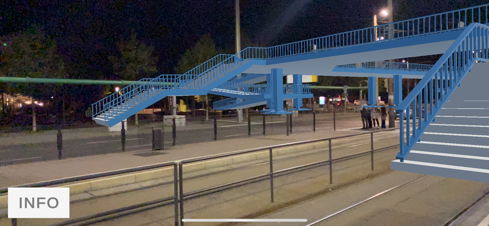

Maix Mayer (Leipzig): Blaues WundAR
Ein Kunstprojekt im Auftrag der Leipzig Tourismus und Marketing GmbH für das 35. Leipziger Lichtfest 2024.
Standort: Goerdelerring
Als Leipziger beteiligte sich Maix Mayer aktiv an den Montagsdemonstrationen 1989 auf dem Leipziger Ring und dokumentierte dies per Video. Der wichtigste Standpunkt für die mediale Dokumentation der Demonstrationen war die 2004 abgerissene Fußgängerbrücke, von den Leipzigern „Blaues Wunder“ genannt. Mittels Augmented-Reality (AR) wird das Bauwerk im Stadtraum am alten Ort wieder erlebbar. Seine App „Blaues WundAR“ errichtet die Brücke virtuell wieder und macht so das „Blaue Wunder“ zum WundAR. Via eingeschalteter Handykamera entsteht eine Überlagerung des Livemodus mit einer 3D-Animation der Brücke.

Die AR Funktion wird zum Lichtfest hier freigeschaltet.
Technische Umsetzung:
seige.digital GbR in Zusammenarbeit mit
Digitalwarenkombinat GbR und Wilhelm Herbrich